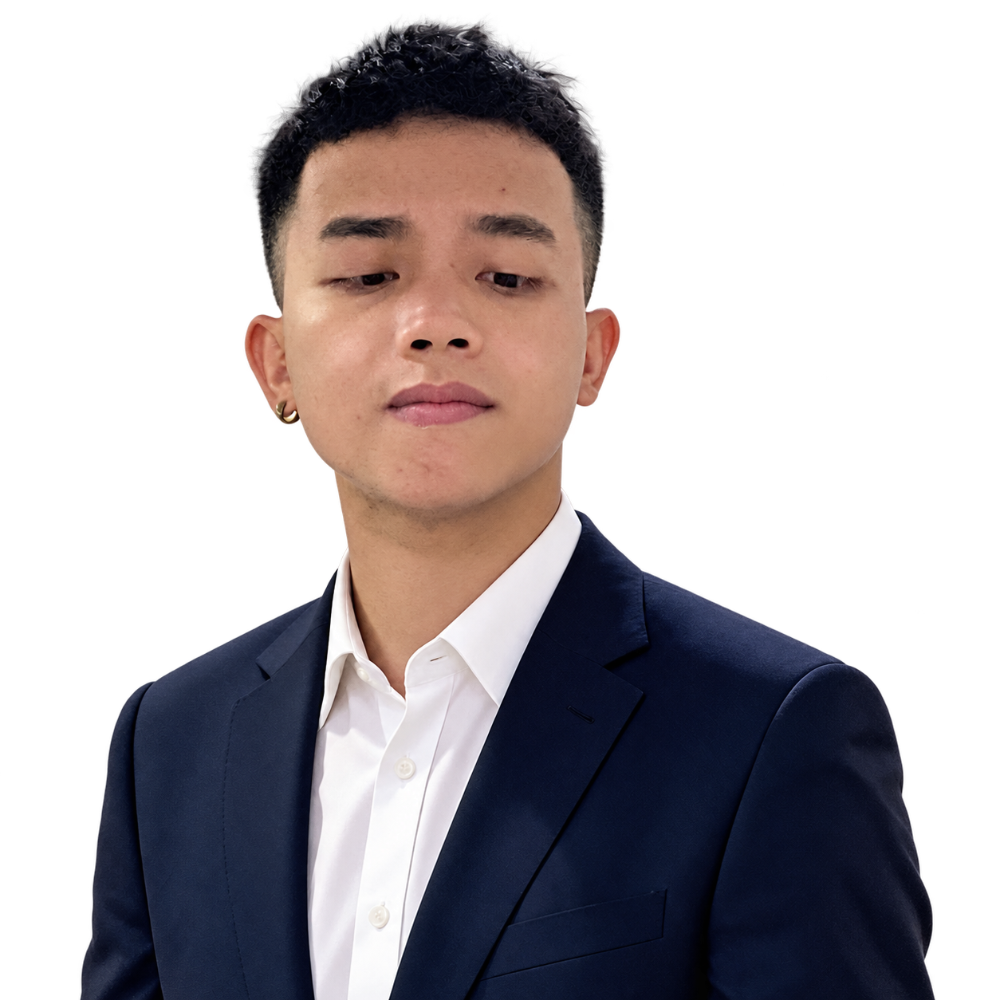

The company
Industry structure, business model, financial quality, and what could change its outlook.

My work has moved across software development, customer service, business operations, and investing.
I started in backend development, building .NET APIs and working with SQL databases. Later, supporting international customers and helping run a family business gave me a closer view of people, products, and execution.
Today I am studying for an MBA, researching Vietnamese equities, and building quant-stock as a long-term personal project. I am interested in both how a business creates value and how data can test an investment idea.
I look at the business, the market environment, and the risk before making a decision.
Industry structure, business model, financial quality, and what could change its outlook.
Trend, liquidity, and relative strength help put a company thesis in context.
Position size, concentration, and the conditions that would change my view.
This is my personal process, not investment advice.
A dated view of my current allocation. Percentages describe positions, not performance or investment advice.
A personal system for market data, research, signal monitoring, and paper trading in Vietnamese equities.
The project began as a daily scanner and grew into a research and operations workspace. It updates and checks market data, describes the broader market context, evaluates stock-selection ideas, and records simulated positions.
I keep research results separate from the daily workflow. That lets me compare hypotheses without presenting an experimental signal as a proven trading strategy.
Factor panels and outcome evaluations compare selection policies across dates, budgets, and holding periods. The goal is to learn what holds up, where it fails, and what remains uncertain.
The scanner, paper records, Telegram reports, and a Streamlit manager help inspect data status, signals, positions, and operational runs.
Experience in software, customer-facing work, and business operations shapes how I approach investing and data.
Studying business, following the Vietnamese market, and developing quant-stock.
Supported international customers in English through chat, phone, and email.
Built REST APIs and worked with SQL databases and business systems.
Helped with operations and coordinated a small team on practical work.
I am open to conversations about investing, data, and useful technology projects.